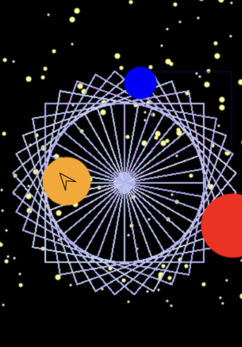

This work represents an area of growth for me by showcasing the patterns I experimented with to achieve a “blackhole” effect for this project. The hardest areas I had to master was creating “planets” through the colored circles and having them move to different places each time the game refreshed. The obstacle I faced was planning how I wanted my black hole to appear, as I wanted it to have a spinning appearance. By asking questions I was able to figure out solutions to how I wanted my project to be presented. I would like to change the blackhole pattern to be a different shape or color next time.
Back